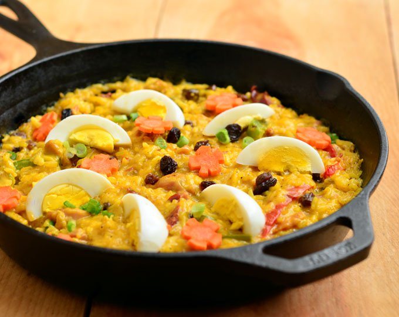

Pinoy Food Recipe

Pork Arroz Valenciana
Prep time
10 mins
Cook time
40 mins
Total time
60 mins
SERVES: 6
Ingredients
½ lb. pork liempo/belly, chopped
3 pieces chorizo de bilbao, sliced diagonally
½ cup malagkit (glutinous white rice)
1 cup Jasmine rice
2 tablespoons tomato paste
1 medium red bell pepper, cut into strips
½ cup raisins
½ cup frozen green peas
1 teaspoon paprika
2 cups pork broth
1 cup coconut milk
1 medium tomato, diced
1 medium yellow onion, diced
3 cloves of garlic, crushed
3 boiled eggs
3 tablespoons extra virgin olive oil
a pinch of Spanish saffron
Salt and pepper to taste
Instructions:
Combine the glutinous rice and jasmine rice. Wash with water twice and then drain. Set aside.
Heat the olive oil in a paellera or wide pan.
Saute the garlic, onion, and tomato until the onion and tomato becomes soft.
Put-in the chopped pork. Cook for 3 minutes.
Add the chorizo de bilbao. Cook for 2 minutes.
Add-in the salt, pepper, saffron, and paprika. Stir.
Pour-in the pork broth and coconut milk. Stir and let boil.
Add-in the washed rice. Stir. Let boil.
Add the tomato paste. Stir. Cover and simmer for 5 minutes.
Put-in the raisins, and green peas. Cover and simmer for 8 minutes.
Add-in the red bell pepper. Continue to simmer until the rice is fully cooked.
Garnish with sliced boiled egg. Serve.
Share and enjoy!